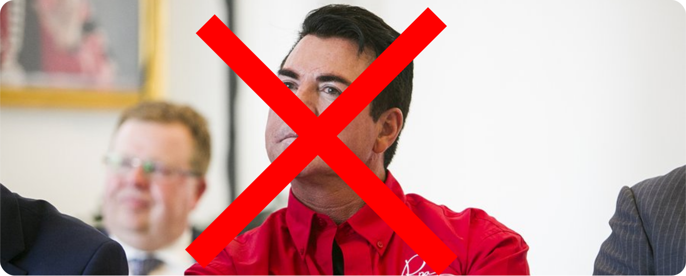

Our Blog
Schnatter stepped down as CEO

Schnatter stepped down as CEO on January 1, 2018, after controversy
around his comments that the National Football League (NFL), who had
a business affiliation with Papa John's, had not done enough to stop
national anthem protests by NFL players, and that the protests had hurt
his business.